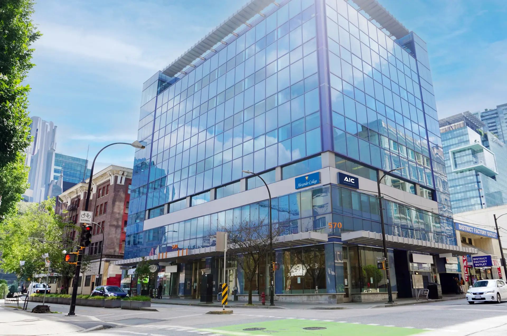

The AIC Venture Studio is in the build.
Canada needs more AI companies built here, owned here, and serving Canadians. We're building the studio to back the founders who'll do it, validation, mentorship, pilot access, and Canadian-hosted compute. It's in active development right now. Join the interest list and you'll be first in the door when intake opens.
- Concept & design2025
- In developmentNow
- Pilot intakeLate 2026
- Studio launchEarly 2027
The commercialization pathway for applied AI ideas.
AIC uses this core area to help promising AI ideas become pilot-ready, market-informed, and partner-ready. The goal is not generic startup programming; it is commercialization support for ventures and applied AI projects with real deployment potential.
Ideas need market discipline
Applied AI ventures need validation, pilot partners, responsible AI design, and commercialization planning before they can scale.
Founders and venture builders
Designed for AI founders, early-stage startups, students, alumni, researchers, SMEs with productizable AI ideas, and internal venture-building opportunities.
Market-ready pathways
Outputs include validation evidence, pilot plans, commercialization roadmaps, mentor connections, investor readiness, and partner-facing materials.
More than co-working space.


Focused on applied AI with deployment potential.
Education AI
Tools that improve student service, learning support, admissions operations, and education workflows.
SME productivity
AI products that help smaller organizations automate practical workflows without losing human oversight.
Voice AI & agentic workflows
Products and workflows connected to service automation, follow-up, routing, and operational support.
Responsible AI tools
Solutions that support governance, privacy, transparency, evaluation, and safe deployment.